System Architecture
The system is organized around two crutches connected through the MADS broker. The master crutch hosts the control and logging services, while both crutches run the sensing agents that publish data to the network. The full Mermaid source is also available in the README architecture section.
Overview
Each crutch is based on a Raspberry Pi Zero 2 W and runs a small set of MADS agents. The master side coordinates the acquisition workflow, stores data, and exposes the web interface. The slave side focuses on local sensing and publishes the same acquisition streams so the master can merge them into a single recording.
Role Split
- Master-only services: Web Server, Coordinator, Status Handler, HDF5 Writer, Eye Tracker.
- Services on both crutches: Tip Loadcell, Handle Loadcell, PPG, UPS.
Agent Details
Web Server (master)
What it does: FastAPI backend and UI host. It manages acquisitions, metadata (test config, comments, conditions), status buffering, visualization, and CSV download.
Commands sent: publishes to ws_command commands such as start, stop, set_offset, get_agents_status, datetime_update, condition, pupil_neon_connect, pupil_neon_disconnect.
Input format: receives status messages on topic status, typically as {"status": {"source", "level", "status", "message", "side?"}}.
Output format: HTTP JSON APIs (for control/status/data) and static pages; writes acquisition metadata in data/index.json.
INI defaults (project template): sub_topic=["status"], pub_topic="ws_command". No custom CLI options in this agent (runs as python web_server.py).
Coordinator (master)
What it does: command router/state gate. It validates transitions (e.g., no start while already recording) and forwards normalized command payloads.
Accepted commands: start (requires id, optional subject_id/session_id), stop, condition (uses label), datetime_update (with datetime_to_set), get_agents_status, set_offset, pupil_neon_connect, pupil_neon_disconnect.
Input format: JSON command message, usually from topic ws_command.
Output format: publishes command fan-out JSON with command plus relevant fields; periodic agent_status (idle/recording).
INI defaults (code/template): sub_topic=["ws_command"], pub_topic="coordinator", health_status_period=500 ms.
Status Handler (master)
What it does: status normalizer and aggregator. It merges agent events/health messages into a consistent status stream and marks agents unreachable on timeout.
Accepted commands: get_agents_status (emits latest snapshot of all tracked agents).
Input format: mixed status/event messages from monitored topics (notably agent_event, coordinator, sensor topics, hdf5_writer, pupil_neon).
Output format: emits {"status": {"source", "level", "status", "message", "side?"}} on topic status.
INI defaults (code/template): max_pending=100, debug=false, unreachable_agent_timeout=3000 ms (template uses 6000), pub_topic="status", configurable sub_topic list.
HDF5 Writer (master)
What it does: topic logger. During recording it appends selected keypaths to HDF5 groups and closes/renames files on stop.
Accepted commands: start (requires numeric id), stop.
Input format: command messages plus sensor/status topic messages; only configured keypaths are persisted.
Output format: periodic agent_status (idle/recording) on topic hdf5_writer; data persisted in .h5 files.
INI defaults (code/template): folder_path="./fallback_data/" (template points to web_server/data), keypath_sep=".", health_status_period=500 ms, required keypaths={...}, pub_topic="hdf5_writer".
Eye Tracker / Pupil Neon (master)
What it does: discovers and connects a Pupil Neon device, controls recording lifecycle, sends condition events, and publishes time-sync statistics.
Accepted commands by state: pupil_neon_connect (IDLE), start (CONNECTED), condition/stop (RECORDING), pupil_neon_disconnect (CONNECTED/RECORDING).
Input format: JSON command messages (typically from coordinator topic stream).
Output format: {"agent_status": ...}, optional error, and sync stats: time_offset_ms_*, roundtrip_duration_ms_*.
INI defaults (code/template): pub_topic="pupil_neon", sub_topic=["coordinator"], health_status_period=500 ms. CLI: -s/--server broker URL.
Tip Loadcell (both crutches)
What it does: reads tip force from HX711, applies side-specific scaling and offset, and publishes force with side tag.
Accepted commands: start, stop, set_offset (rejected during recording).
Input format: JSON with command field from coordinator stream.
Output format: during recording {"force": number, "side": "left|right"}; periodic agent_status; on calibration info.offset.value and info.offset.test.
INI defaults (code/template): datapin=6, clockpin=26, health_status_period=500 ms, side required (left|right), scaling.left/right required for runtime validation, pub_topic="tip_loadcell".
Handle Loadcell (both crutches)
What it does: reads 8 ADS1263 channels, maps channels to anatomical labels, applies per-channel ranges and offsets, and publishes force vectors plus performance metrics.
Accepted commands: start, stop, set_offset (rejected during recording).
Input format: JSON with command.
Output format: force object with labeled channels (up_front, up_back, etc.), side, periodic agent_status, and perf block (adc_read_ms, process_ms, cycle_ms, adc1_rate, channels).
INI defaults (code/template): ref_voltage=4.12, adc1_rate=7 (template uses 9), health_status_period=500 ms, input_map (8 channel-label pairs), range_map.left/right, side required, pub_topic="handle_loadcell".
PPG (both crutches)
What it does: controls MAX30100 sampling and publishes IR/RED channels while recording, plus periodic health status.
Accepted commands: start, stop.
Input format: command messages from configured sub-topics (default coordinator).
Output format: periodic status payload with agent_status and side; during recording, samples with ir, red, side; error string when failures occur.
INI defaults (code/template): pub_topic="ppg", sub_topic=["coordinator"], health_status_period=500 ms, period=1 ms in code (template uses 10), side="unknown". CLI: -s/--server, -o/--options (e.g., side=left).
UPS (both crutches)
What it does: reads INA219 power telemetry, estimates battery percentage and remaining time, and publishes periodic power status.
Accepted commands: none (continuous publisher).
Input format: no command input required for operation.
Output format: {"agent_status":"idle","side":...,"info":{"voltage","current","power","percent","remaining_battery_time"}}.
INI defaults (code/template): pub_topic="ups", health_status_period=500 ms (template uses 5000), i2c_bus=1, i2c_address=0x43 (67), battery_empty_voltage=3.0, battery_full_voltage=4.2. CLI: -s/--server, -o/--options for side.
Data Flow
The Web Server issues commands to the Coordinator through the MADS broker. The Coordinator drives the sensing agents, the Status Handler reports the live health of the system, and the HDF5 Writer persists the data streams that are later consumed by the visualization and download tools.
System Diagram
